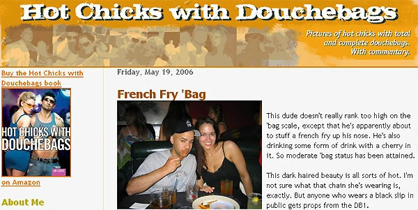

French Fry Bag
I was catching up on Tony's site tonight and stumbled across this photo of Tony from 2006. Apparently he ended up on Hot Chicks With Douche Bags back then, which I think is awesome.

Tony spends his days injecting massive amounts of awesome into the LA Times as the head of their 40-some odd blogs, and his nights attending cool music and social events in Los Angeles, so I think it's pretty funny he'd end up there. But hey, getting your photo taken with a cute girl is always a good thing.
I hung out with Tony for New Year's out in Toronto last year, and we had a lot of fun drinking beer and sitting around watching me spill Chinese food on myself at 2am. I also was down in Los Angeles hanging out with Tony at some raunchy North Hollywood place back in June, which was pretty awesome considering I hadn't been to LA since I was a kid. Hopefully the big T. will make the trek up North here again sometime soon so we can all hang out with him again. But until that time, make sure to head on over to HCWD from time to time to see if Tony shows up again with some total babe!